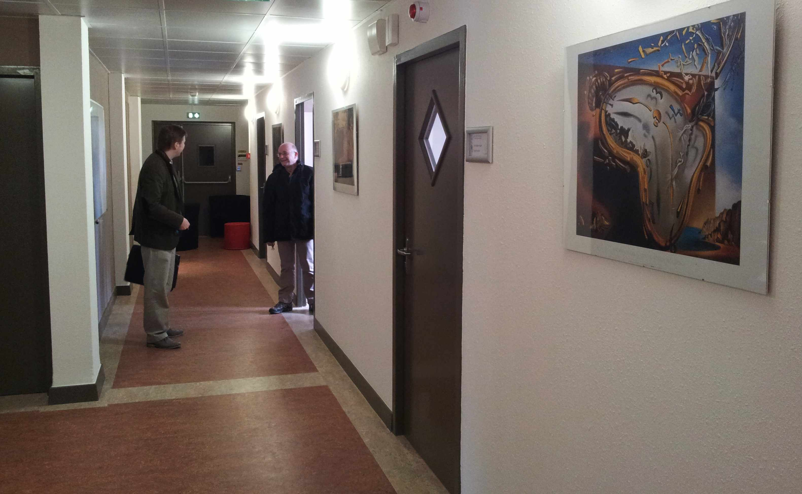

DALI
Digits Architectures Logiciels Informatique
Accueil
Présentation
Membres
Publications
Projets
Logiciels
Séminaires
Contact
Liens
Accueil
DALI

L'équipe-projet DALI est l'unité de recherche en informatique commune à l'
Université de Perpignan Via Domitia
et au
Laboratoire d'Informatique, Robotique et Microélectronique de Montpellier
(CNRS : UMR 5506 et Université Montpellier 2).
L'équipe-projet DALI, implantée à Perpignan sur le campus principal de l'UPVD, est membre du
Département d'Informatique
du LIRMM. Ses thèmes de recherche sont la haute performance et la précision des calculs sur ordinateurs.
Actualités